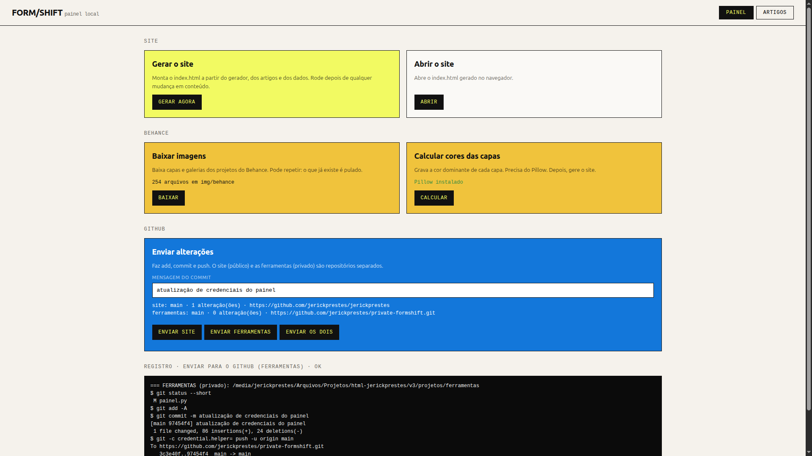

Todos os artigos, do mais novo ao mais antigo.
← Voltar ao inícioSoluções que desenvolvi: WordPress, WooCommerce,
integrações e infraestrutura, explicadas passo a passo.
ARTIGOS / DESENVOLVIMENTO
WORDPRESS · PHP · INFRA

TECH01→Como montei um painel de controle para um site estático apenas com Python12 NOV 2026 TECH02→Widget de FAQ para páginas de produto no WooCommerce10 NOV 2026 TECH03→Catálogo de produtos com CPT, sem WooCommerce28 OUT 2026 TECH04→Backup que trava: diagnóstico do UpdraftPlus em hospedagem compartilhada14 OUT 2026Como uso inteligência artificial no trabalho:
geração de imagem, prompts e automações.
ARTIGOS / INTELIGÊNCIA ARTIFICIAL
PROMPTS · IMAGEM · AUTOMAÇÃO